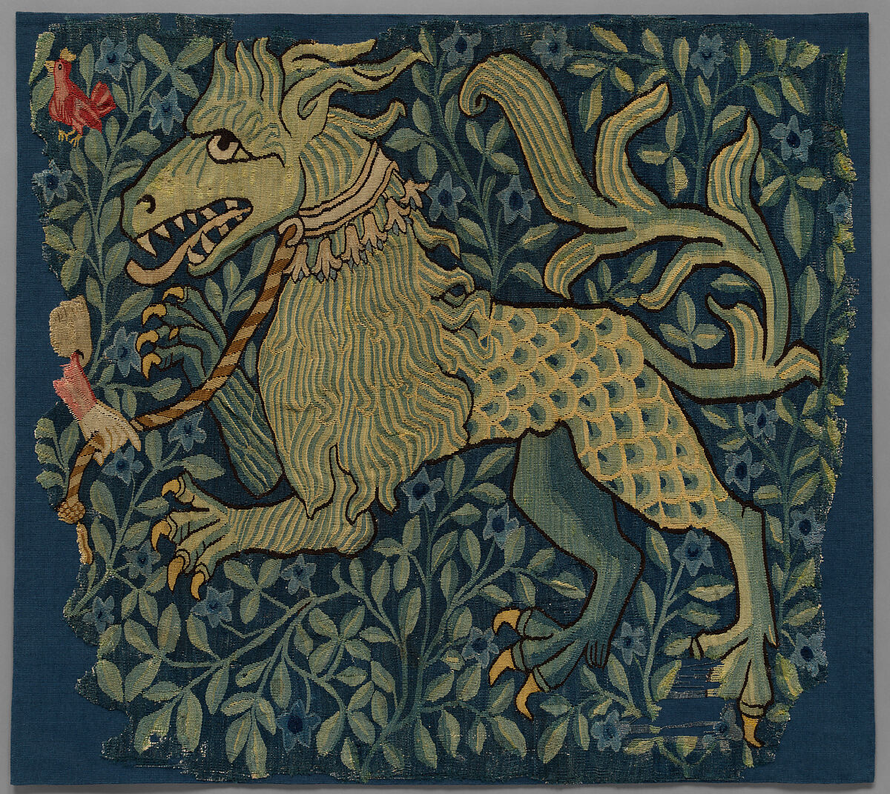
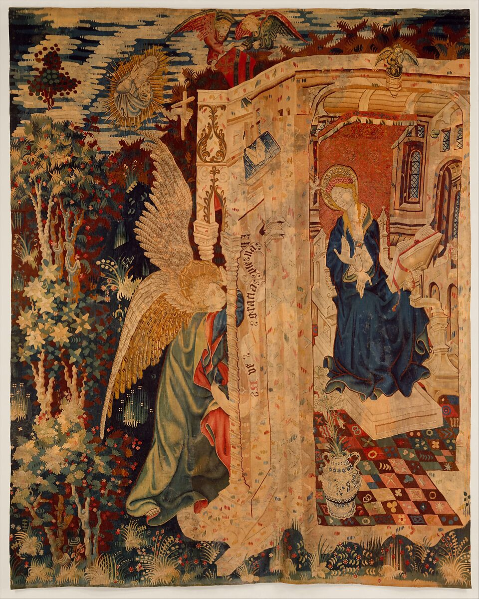
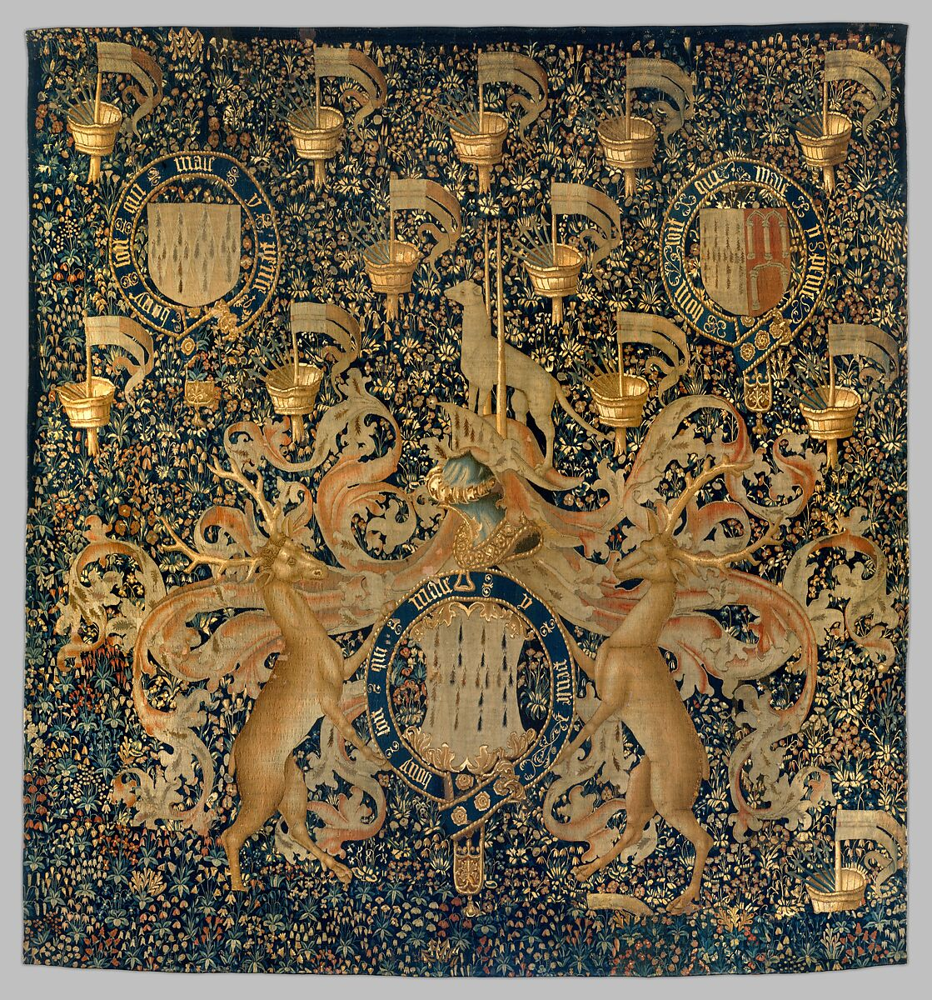
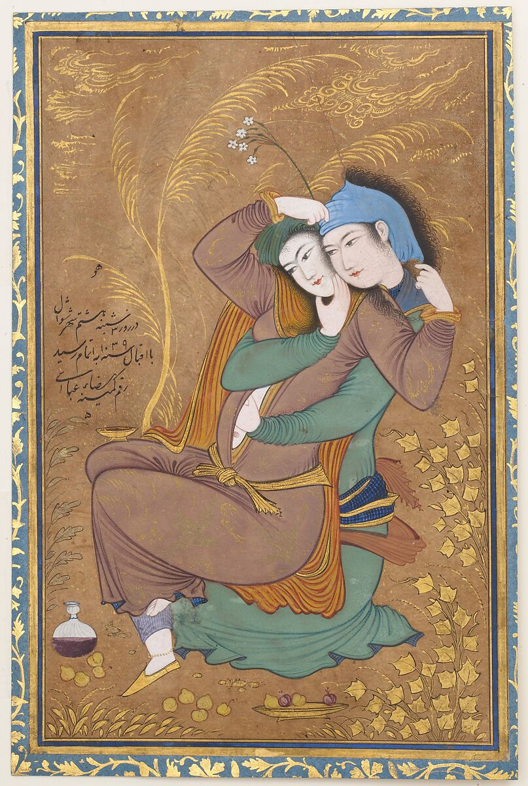
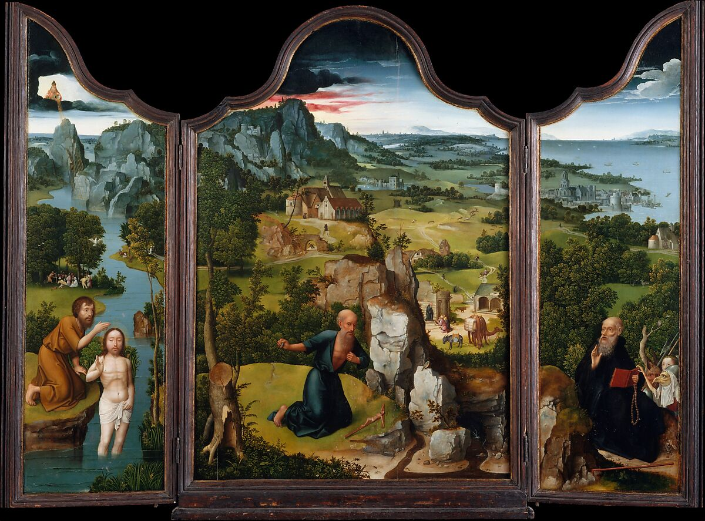
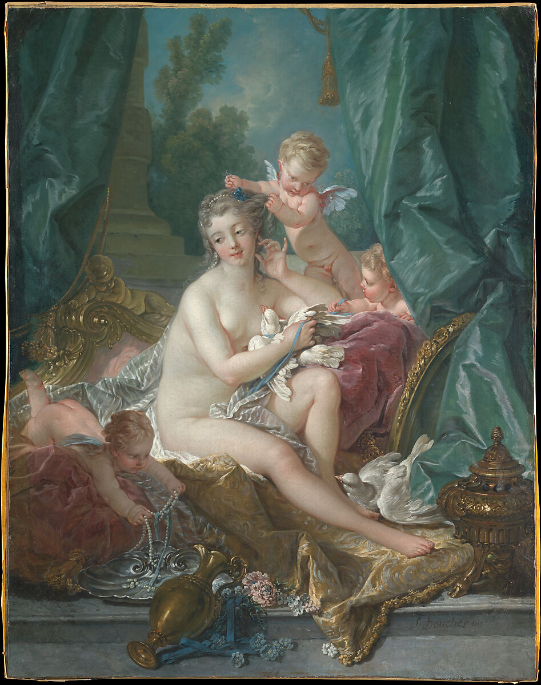
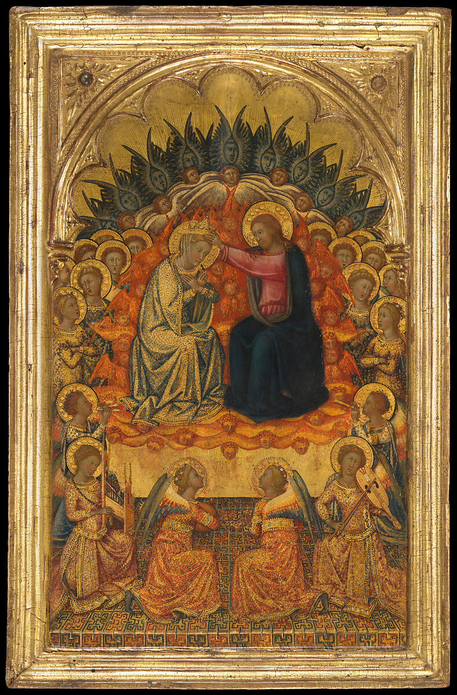

CSS FLOATS
USING CSS FLOAT AND CLEAR PROPERTIES

Fragment of a Tapestry or Wall Hanging, Unknown Artist, 1420-30

Tapestry with the Annunciation, Unknown Artist, 1410-20

News of the Stag from the series known as the Hunters' Chase, Unknown Artist, 1645-75

Tapestry with Armorial Bearings and Badges of John, Lord Dynham, Unknown Artist, 1488-1501

The Lovers, Riza-yi Abbasi, 1039

The Penitence of Saint Jerome, Joachim Patinir, 1515

The Toilette of Venus, Francois Boucher, 1751

The Coronation of the Virgin, Niccolo di Buonaccorso, 1380